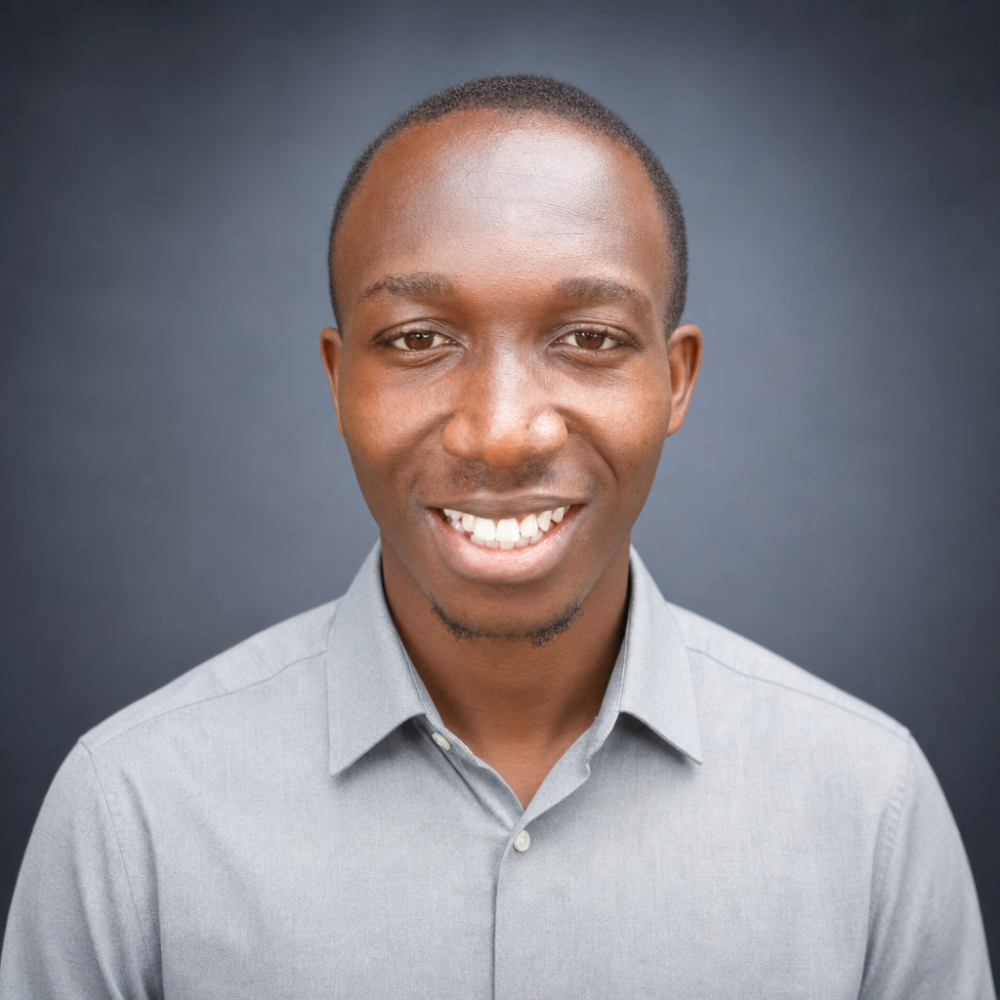

Emmanuel Effiom Duke
I work where research, engineering, and impact meet — publishing on energy & air quality, building products that ship, and growing the communities and founders around me. From CFD models to fintech to youth upskilling.

About
I'm Emmanuel Effiom Duke, an interdisciplinary researcher focused on energy systems and air quality, a full-stack developer, and a growth leader. My research spans CFD modeling of power-plant components, machine-learning-driven energy optimization, and open digital platforms for climate and citizen science.
Beyond research, I ship software that solves real problems — fintech, AI agents, geospatial tools, and platforms across agriculture, security, and career development — and I invest in people, mentoring founders and driving growth for community programmes across Africa.
Experience
The Upskill Space [Your Digital Skill Academy] · Part-time · Enugu State, Nigeria
Jun 2026 – Present
Drives growth strategy for a fast-scaling upskilling academy — turning student behavior, competitor moves, and market trends into decisions that grow reach and retention.
The Tony Elumelu Foundation · Part-time
Mar 2025 – Present
Mentors early-stage founders across Africa through the continent's flagship entrepreneurship programme, helping them sharpen ideas into fundable, resilient businesses.
Engineering for Change (E4C) · Part-time · Remote
Apr 2020 – Present
An active member of a global engineering community applying technology to real-world development challenges in underserved regions.
EU Erasmus+ AirforAll · Seasonal
Feb 2023 – Feb 2024
Joined an international citizen-testing group to grow public air-quality knowledge and stress-test the usability of an open environmental toolkit under the EU Erasmus+ AirForAll project.
Transcorp Hotels Plc · Internship · Calabar, Nigeria
Jan 2022 – Jan 2023
Hands-on training in the operation and maintenance of MEP and HVAC systems — air-cooled chillers, boilers, and elevators — in a live hospitality environment.
Education
B.Eng, Mechanical Engineering — foundation in thermodynamics, energy systems, and applied engineering that underpins my research.
Selected for the Earth Summer School, exploring hybrid technologies that convert CO₂ into commercially valuable products (2024).
Examined the health impacts of urban air pollution and the science-led strategies used to measure and reduce it.
Impact & Leadership
Head of Market Research & Growth (Volunteer) · Jerry Eze Foundation Grantee
Volunteer growth lead for a youth-focused upskilling enterprise backed by the Jerry Eze Foundation — shaping the strategy that widens access to digital skills.
Mentor
One of the mentors guiding African entrepreneurs through the Tony Elumelu Foundation — the continent's largest philanthropic entrepreneurship platform.
Leadership Alumnus
Graduate of Common Purpose UK's leadership programme, trained to lead across cultures, sectors, and boundaries.
Selected work
More on GitHub.
How I can help
Whether you're a research group, a startup, a climate/energy programme, or a mission-driven organization, here's where I can add value — grounded in real research and shipped work.
CFD modeling, energy-systems analysis, ML-driven optimization, and citizen-science air-quality platforms — from study design to publication.
Ship real products end to end — fintech, AI agents, geospatial dashboards, and data platforms across web and backend.
Turn user behavior, competitor analysis, and market trends into growth decisions that expand reach and retention.
Data collection, analysis, and machine-learning modeling for energy, climate, and operational efficiency problems.
Mentor founders and students (Tony Elumelu Foundation, The Upskill Space) and lead community upskilling programmes.
Common Purpose-trained to work across cultures, sectors, and disciplines — bridging research, industry, and community.
Research
Full list on Google Scholar.
Recognition
Street Priests Inc. — certificate of recognition.
NNPC/Chevron Joint Venture.
State-level winner, Science Competition for Primary Schools.
Participant (NTS).
MICROGRIDSPY — energy systems modelling (2025).
Data analysis & collection for renewables (2025).
Introductory AI Safety Fundamentals course and the Technical AI Safety / Alignment track.
Leadership, relationship building & collaboration (2020).
UNITeS Cisco Networking Academy.
Business and operations foundations.
Full profile on LinkedIn.